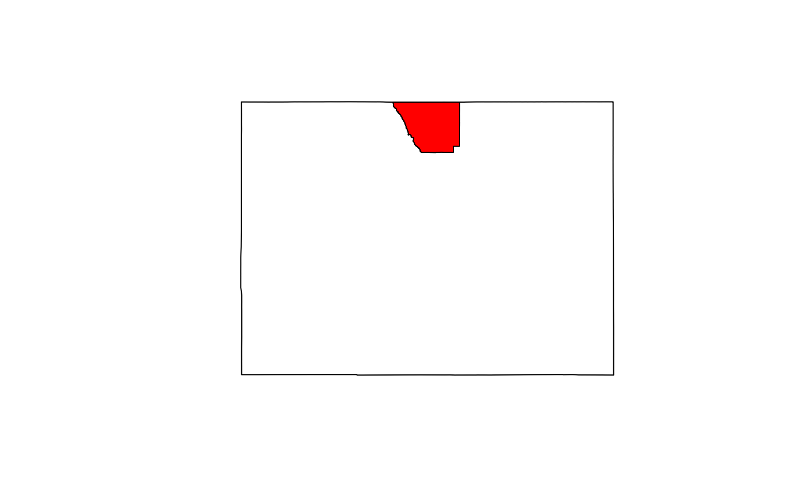
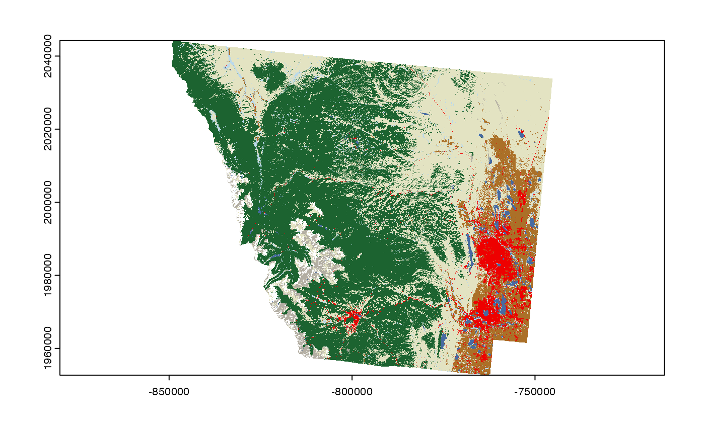
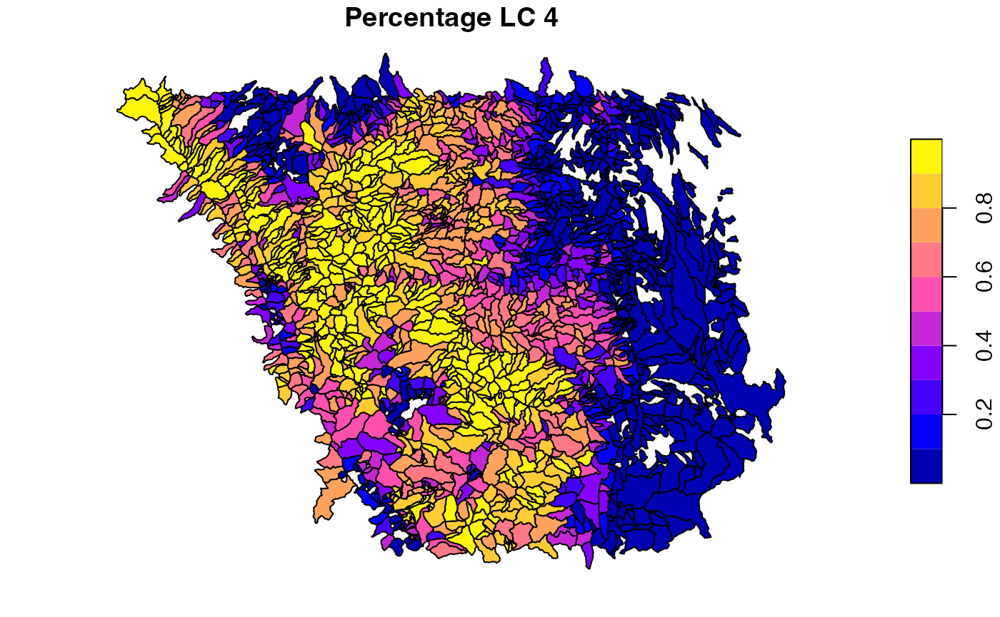
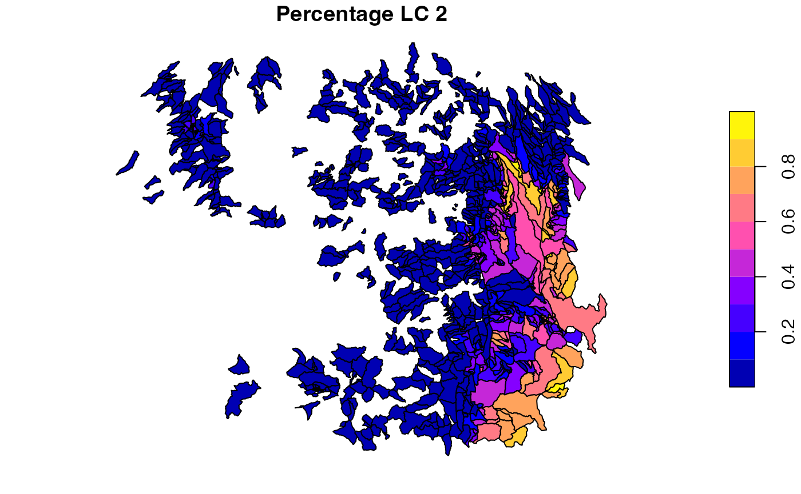
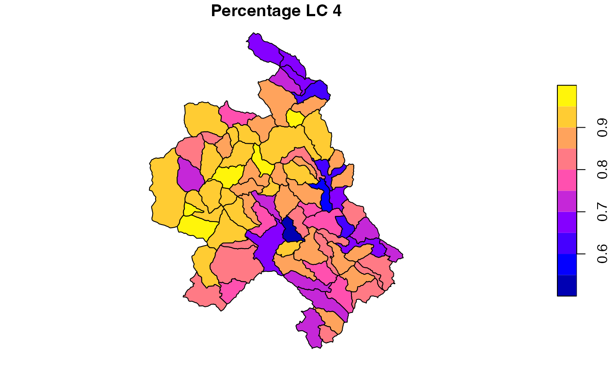
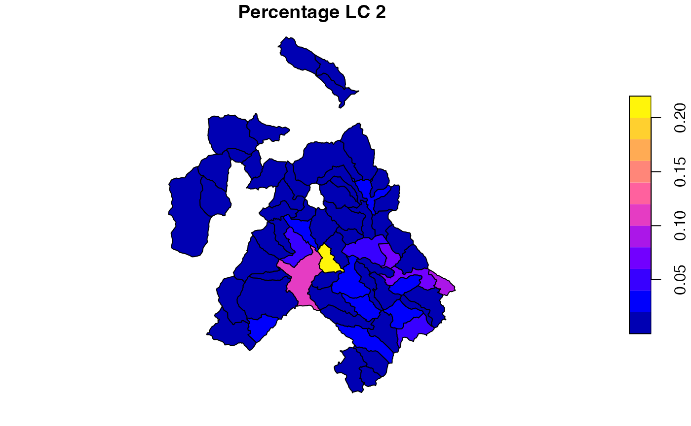
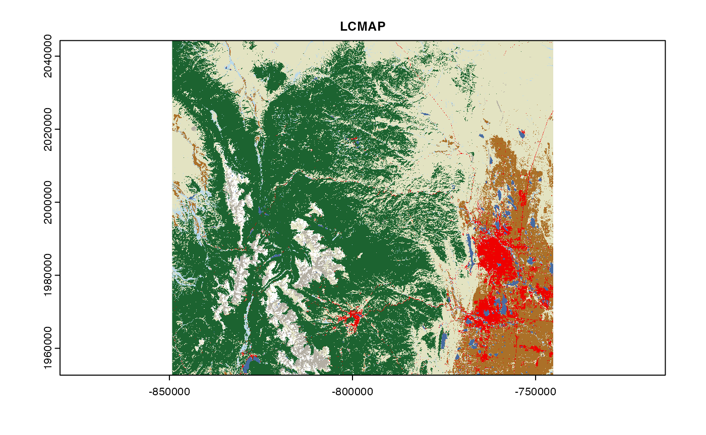
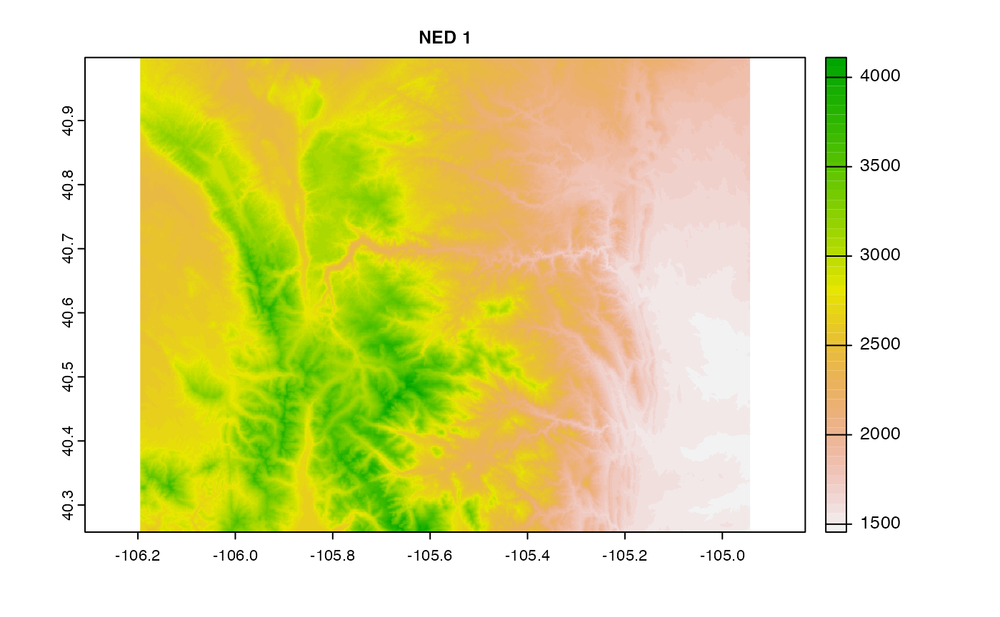
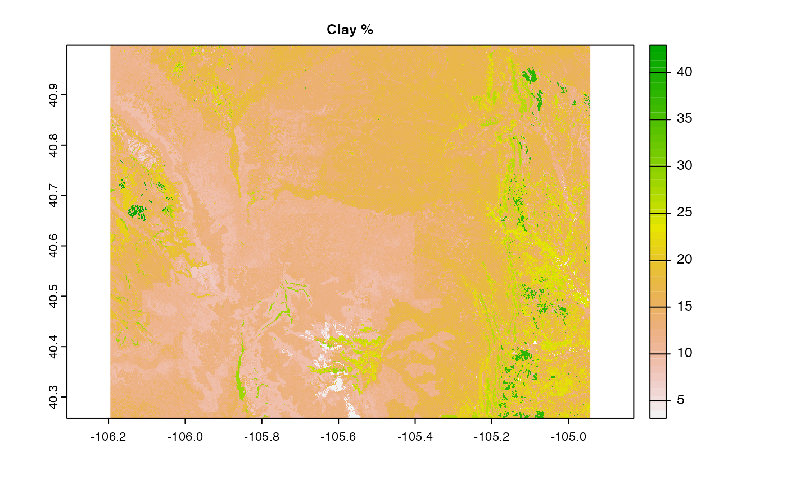

We are looking for efficient, remote-access to LCMAP (and NLCD) data that is not reliant on a service like WCS or REST APIs.
The goal is to be able to access each file at a single non-authenticated end point, and that each file is easily discoverable (either online or via a catalog). The semi-new VSI capabilities in GDAL offer a way to achieve this using the existing LCMAP resources, however they are not stored effiecently for this purpose given they are zipped.
The aim is to show what is possible with what is currently available and - hopefully - provide rationale for a minimally-invasive step towards more efficient data access.
Say we want 2020 land cover data for a county in Colorado (Larimer). We will use this as a respective AOI.
AOI <- AOI::aoi_get(state = "CO", county = "Larimer")This county is ~6,825 sqkm with a bounding box area of ~8,700 sqkm. This is approximetly 10,600,000 LCMAP 30 meter cells.

We can backdoor into the existing resources using a fairly complex request that requires knowing the location of the zipped directory and the included file names.
These could be cataloged…
system.time({
r <- rast("/vsizip/{/vsicurl/https://edcintl.cr.usgs.gov/downloads/sciweb1/shared/lcmap/public/full_extent_downloads/version_12/primary-landcover_conus_year_data/LCMAP_CU_2020_V12_LCPRI.zip}/LCMAP_CU_2020_V12_LCPRI.tif")
r2 <- crop(r, project(vect(AOI), crs(r)))
})## user system elapsed
## 14.514 5.876 141.989While this does meet the conditions outlined above it is fairly slow…
As an alternative, I downloaded, unzipped, and moved the data to a s3 bucket (not public sorry). Here we can use a much simplier vsi call.
system.time({
r <- rast("/vsis3/formulations-dev/spatial-grids/LCMAP_CU_2020_V12_LCPRI.tif")
r2 <- crop(r, project(vect(AOI), crs(r)))
})## user system elapsed
## 1.416 0.535 9.452Overall this approach takes ~2% of the time needed to extracted data from the zipped version.
We have been working to show the advantages of VRT formats with the National Map Data. Since LCMAP is not tiled I do not expect improvements working over the VRT, but, we can check:
system.time({
r <- rast("/vsis3/formulations-dev/spatial-grids/LCMAP_CU_2020_V12_LCPRI.vrt")
r2 <- crop(r, project(vect(AOI), crs(r)))
})## user system elapsed
## 1.488 0.498 5.718It is not clear if the tif files provided by LCMAP are COGs (the xml file suggests they are?). Either way, we also convert the LCMAP TIF to a uncompressed COG for completeness, This creates a large file - blew up from 1.2 GB to 22GB w/o compression. This might prove prohibitive for the LCMAP team given there are 35 years * 10 varibable (~7,700 GB!!)
I added this file to the same s3 bucket and we can time access to it:
system.time({
r <- rast("/vsis3/formulations-dev/LCMAP_CU_2020_V12_LCPRI_cog.tif")
r2 <- crop(r, project(vect(AOI), crs(r)))
})## user system elapsed
## 0.257 0.172 2.603So far we have shown access uisng r-spatial tools, however any language that has a GDAL binding can be used…
sf::write_sf(AOI, "aoi.gpkg")
system.time({
system("gdalwarp -cutline aoi.gpkg -crop_to_cutline /vsis3/formulations-dev/spatial-grids/LCMAP_CU_2020_V12_LCPRI.vrt aoi.tif")
})## user system elapsed
## 1.752 0.564 6.781
So why is this needed? Here we provide two basic use cases that support USGS, NOAA and community goals.
One of objectives we are trying to achieve with improved LCMAP access is the ability to rapidly generate summary attribute descriptors over large sets of spatial units.
The “pseudo” AOI in this example is all NHD catchments in Larimer county - we can get this with nhdplusTools:
nhd <- nhdplusTools::get_nhdplus(AOI = AOI, realization = "catchment")In total this provides us with 2833 catchments, covering the 1.0594326^{7} LCMAP cells. To compute these, we can utilize the zonal toolset:
system.time({
sum = zonal::execute_zonal(r2, nhd, FUN = "freq", ID = 'featureid')
})## user system elapsed
## 17.908 1.586 19.867
plot(sum[sum$value == 4, 'percentage'], main = "Percentage LC 4")
plot(sum[sum$value == 2, 'percentage'], main = "Percentage LC 2")
This can also be done straight from web resources!
Here is a complete remote access summary of LCMAP landcover over NextGEN CAMELS basin. It is in this type of access that the key points outlines in the introduction become critical:
system.time({
sum = zonal::execute_zonal("/vsis3/formulations-dev/spatial-grids/LCMAP_CU_2020_V12_LCPRI.vrt",
sf::read_sf('/vsis3/formulations-dev/CAMELS20/camels_01047000_3321976/spatial/hydrofabric.gpkg', "catchments"),
FUN = "freq",
ID = 'ID')
})## user system elapsed
## 1.792 0.383 5.952
plot(sum[sum$value == 4, 'percentage'], main = "Percentage LC 4")
plot(sum[sum$value == 2, 'percentage'], main = "Percentage LC 2")
Say we want a collection of data for an area:
We can access this data from s3, HTTPS, and from Lynker, Github and Duke. The principles outlined above can help us get there. And while this “solves” out needs I would want the data to remain at the authoritative sources and not redistributed by us:
files <- c(
"/vsis3/formulations-dev/spatial-grids/LCMAP_CU_2020_V12_LCPRI.vrt",
"/vsicurl/http://mikejohnson51.github.io/opendap.catalog/ned_1_tester.vrt",
"/vsicurl/http://hydrology.cee.duke.edu/POLARIS/PROPERTIES/v1.0/vrt/clay_mean_0_5.vrt"
)
o <- lapply(1:length(files), function(x) {
r <- rast(files[x])
crop(r, project(vect(AOI), crs(r)))
})